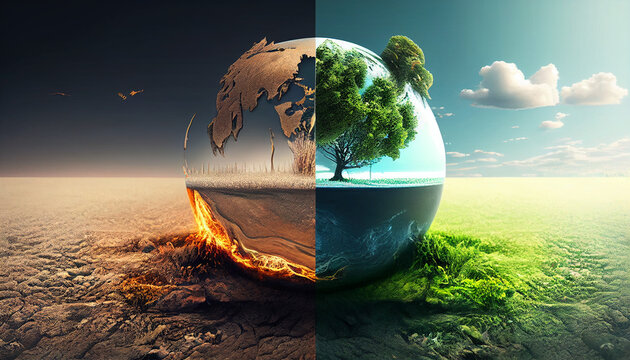
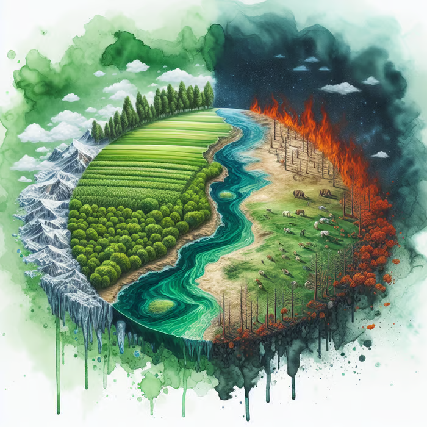

The Silent Threat: Understanding the Causes, Effects, and Impacts of Carbon Dioxide
Scroll down to see the story.
Introduction:
In the modern world, carbon dioxide (CO2) has emerged as one of the most significant
greenhouse gases contributing to climate change. This informative piece delves into the
primary causes of increased CO2 emissions, including fossil fuel combustion, industrial
processes, and deforestation. Additionally, we will explore the effects of rising carbon
dioxide levels on both the environment and human health, ultimately examining its broader
impacts on our planet.
Rising Action:
1. Fossil Fuel Combustion: The burning of fossil fuels—coal, oil, and natural gas—remains
the largest source of CO2 emissions globally. Transportation systems reliant on gasoline and
diesel engines emit vast amounts of CO2 into the atmosphere. Power plants that burn coal for
electricity generation are also major contributors. In 2020 alone, fossil fuel combustion
accounted for approximately 75% of global CO2 emissions.
2. Industrial Processes: Various industrial activities contribute significantly to CO2
emissions. Cement production is one such process; it releases large quantities of carbon
dioxide during both raw material extraction and chemical reactions involved in its
manufacture. Other industries like steel production and chemical manufacturing also add to
this burden through energy - intensive operations.
3. Deforestation: Trees play a crucial role in absorbing CO2 from the atmosphere through
photosynthesis. However, rampant deforestation for agriculture or urbanization reduces this
natural carbon sink. When trees are cut down or burned, not only is their ability to absorb
CO2 lost but also the stored carbon in their biomass is released back into the atmosphere.

Climax:
The increasing concentration of carbon dioxide in our atmosphere has dire consequences for
both environmental stability and human health. As CO2 levels rise:
- Environmental Effects: The greenhouse effect intensifies, leading to global warming—a
rise in Earth's average temperature that disrupts weather patterns worldwide. This results
in extreme weather events such as hurricanes, droughts, and floods.
- Human Health Impacts: Elevated CO2 levels can exacerbate respiratory issues as air
quality declines due to increased pollutants associated with higher temperatures. Moreover,
climate change can contribute to food insecurity through crop failures caused by altered
growing conditions.
Falling Action:
As awareness grows regarding these pressing issues associated with carbon dioxide emissions,
various initiatives are being implemented globally:
- Governments are enacting policies aimed at reducing fossil fuel dependency by promoting
renewable energy sources like solar and wind.
- Industries are adopting cleaner technologies aimed at minimizing their carbon footprint.
- Reforestation efforts are underway to restore ecosystems that have been lost due to
deforestation.

Resolution:
Understanding the intricate relationship between carbon dioxide emissions from fossil fuel
combustion, industrial processes, and deforestation is crucial for developing effective
strategies against climate change. By recognizing its far-reaching impacts on both our
environment and human health—alongside proactive measures—we can work toward a sustainable
future where breathable air and a stable climate become a reality rather than a distant
dream.
In conclusion, addressing carbon dioxide emissions requires collective action from
individuals, businesses, governments—and an unwavering commitment to protecting our planet
for future generations.